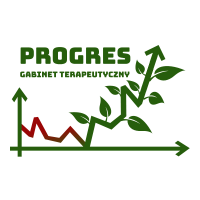

mgr Artur Tebień
Jestem pedagogiem, terapeutą uzależnień (w trakcie certyfikacji PARPA). Certyfikowanym Mediatorem Sadowym wpisanym na listę Mediatorów Sadu Okręgowego w Krakowie Ukończyłem studia magisterskie o specjalizacji Pedagogika Resocjalizacyjna i Sądowa oraz profilaktyka na Uniwersytecie Jana Kochanowskiego w Kielcach. Skończyłem Studium Pomocy Psychologicznej i Interwencji Kryzysowej (I i II stopień) w Instytucie Psychologii Zdrowia w Warszawie, uzyskując certyfikat specjalisty pomocy i interwencji psychologicznej, w Warszawie . Swoje umiejętności doskonaliłem pracując w Punkcie konsultacyjnym Urzędu Miasta i Gminy Wieliczka ul. Pocztowa 1 w charakterze realizatora Gminnego programu profilaktyki psychoterapeuty, konsultanta w pisaniu pism procesowych, prowadzenia indywidualnych spotkań o charakterze pomocy psychologicznej. Przez 8 lat przewodniczyłem pracy Gminnej Komisji Rozwiazywania Problemów Alkoholowych w gminie Wieliczka (56 000 mieszkańców). W Powiatowym Centrum Pomocy rodzinie w Wieliczce prowadzenia indywidualnych spotkań o charakterze pomocy psychologicznej terapii par, praca w charakterze mediatora Sadowego (proces przed rozwodowy pomocny w ustalaniu istotnych oczekiwań i zakresów ,podnoszonych na sali Sadu) krótkotrwałą indywidualna terapia z dziećmi młodzieżą i osobami dorosłymi Oraz w pracy pedagoga, psychoterapeuty indywidualnego, interwenta kryzysowego, w charakterze członka zespołu interwencyjnego w Środowiskowym Centrum Zdrowia Psychicznego w Wieliczce, jako prowadzać indywidualne spotkania interwencyjne bądź o charakterze pomocy psychologicznej Doświadczenie gromadziłem również pracując w Domu dziecka w Pawlikowicach, bądź w Pogotowiu Opiekuńczym w Skawinie W Środowiskowym Domu samopomocy w Wieliczce w charakterze terapeuty zajęciowego z klientami chorującymi psychicznie W świetlicy socjoterapeutycznej Przystań w Niepołomicach w charakterze terapeuty dzieci i młodzieży bądź jako konsultant wychowawca wolontariusz Świetlicy terapeutycznej w im świętej Kingi w Wieliczce oraz Przedszkolu Montesorek w Wieliczce. Koordynowałem prace Młodzieżowego Koła Wolontariatu w Wieliczce przy Urzędzie Miasta i Gminy Wieliczka jako koordynator pracy i wychowawca. Ponadto odbyłem szereg kursów i szkoleń podnoszących moje kwalifikacje, są to m.in.: , skończyłem Studium Pomocy Psychologicznej i Interwencji Kryzysowej (I i II stopień) w Instytucie Psychologii Zdrowia w Warszawie, uzyskując certyfikat specjalisty pomocy i interwencji psychologicznej, Szkolenie Mediatora Sadowego. Ukończyłem studia podyplomowe na Uniwersytecie Ekonomicznym w Krakowie jako specjalista Ekonomii Społecznej. Brałem udział w licznych konferencjach naukowych na rzecz pomocy dzieciom i młodzieży z autyzmem, niepełnosprawnością intelektualną i zaburzeniami rozwojowymi, uzależnieniach. Przez 8 lat byłem członkiem ZESPOLU Interdyscyplinarnego w Gminie Wieliczka w zakresie tworzenia procedur Niebieskiej Karty przeciwdziałania przemocy w rodzinie, realizowania programu naprawczego. Od 2008 roku pracuję zawodowo, w charakterze konsultanta terapeuty mediatora wychowawcy obecnie prowadzę prywatny gabinet interwenta kryzysowego (doświadczenie zdobyłem pracując w Policji w pionie prewencji przez 20 lat obecnie st aspirant w stanie spoczynku) oraz Przez 12 lat pracowałem jako Kurator społeczny dla dorosłych w Sadzie w Wieliczce. Jestem w chwili obecnej zaangażowany w pomoc psychologiczna w zakresie studzenia emocji dot zakażeń Korona wirusem COViT 19 tak osób dorosłych jak i u dzieci tak za pośrednictwem mediów społecznościowych telefonu, Skype jak i w indywidualnej rozmowie o charakterze wsparcia psychologicznego zajmuję się przede wszystkim psychologiczną, poradnictwem i terapią dzieci, dorosłych młodzieży, udzielam wsparcia i wskazówek ich rodzinom. Prowadzę terapię dla dzieci nieśmiałych, grupę wsparcia dla młodzieży.
W życiu prywatnym jestem mężem. Lubię podróże, wędrówki spacery ze swoim psem labradorem, teatr, dobry film, muzykę i spotkania z ludźmi. W życiu stawiam przede wszystkim na rozwój osobisty, odkrywanie tego co nieznane, podnoszenie swoich kompetencji i profesjonalną pomoc swoim pacjentom.
Gabinet PROGRES
Zapraszam na ...
Rozmowa face to face

Rozmowa grupowa

Terapia rodzinna

Pisma procesowe
Terapia uzależnień
Pomoc

oraz terapii uzależnień "PROGRES" w Wieliczce
Artur Tebień
ul. Krakowska 15a 32-020 Wieliczka
Gabinet czynny w godzinach:
Poniedziałek - Piątek 8:00 - 16:00
Sobota 9:00 - 12:00
tel. 696-613-855
Dane kontaktowe:
Gabinet interwencji kryzysowej, pomocy psychologicznejoraz terapii uzależnień "PROGRES" w Wieliczce
Artur Tebień
ul. Krakowska 15a 32-020 Wieliczka
Gabinet czynny w godzinach:
Poniedziałek - Piątek 8:00 - 16:00
Sobota 9:00 - 12:00
tel. 696-613-855